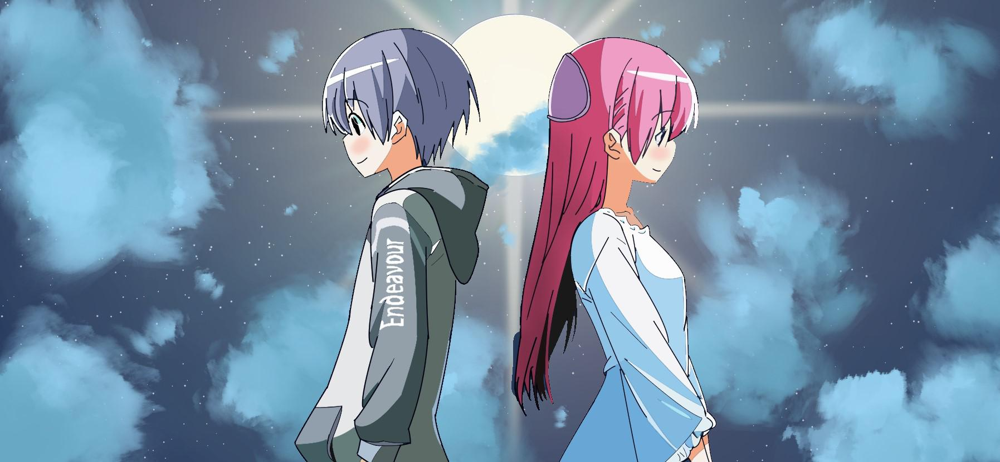
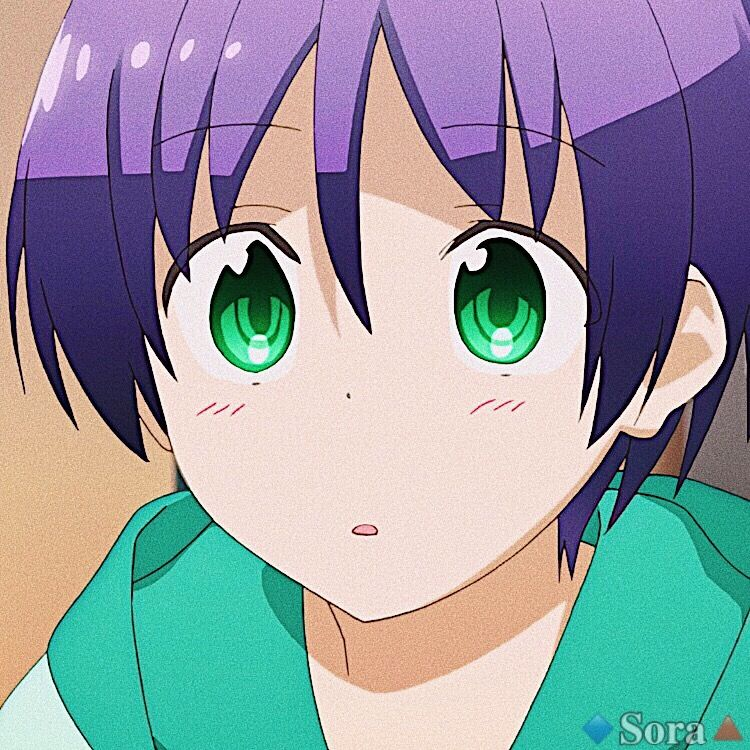
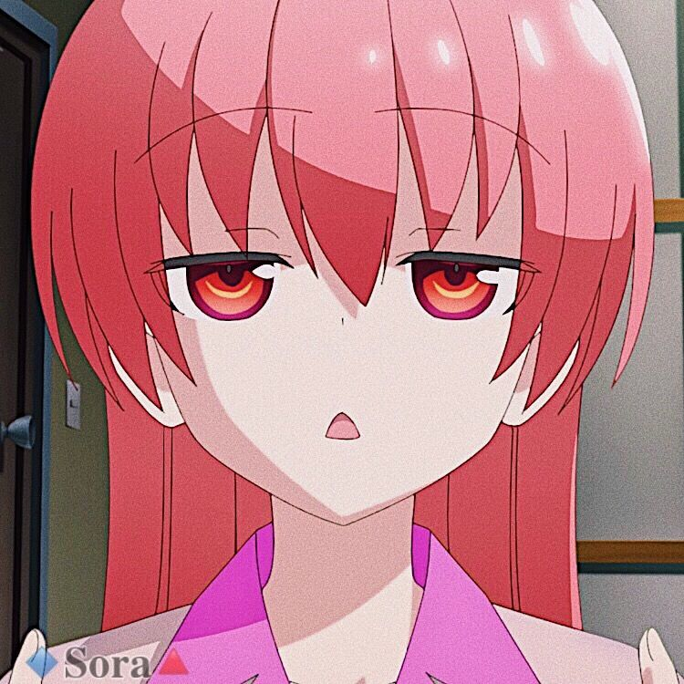
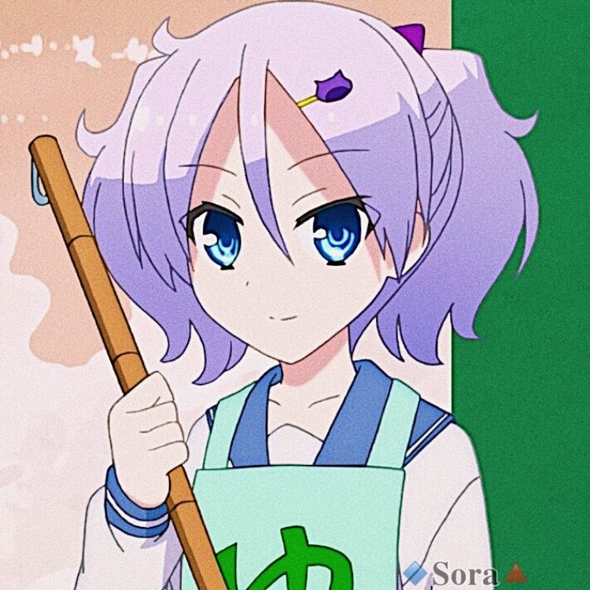
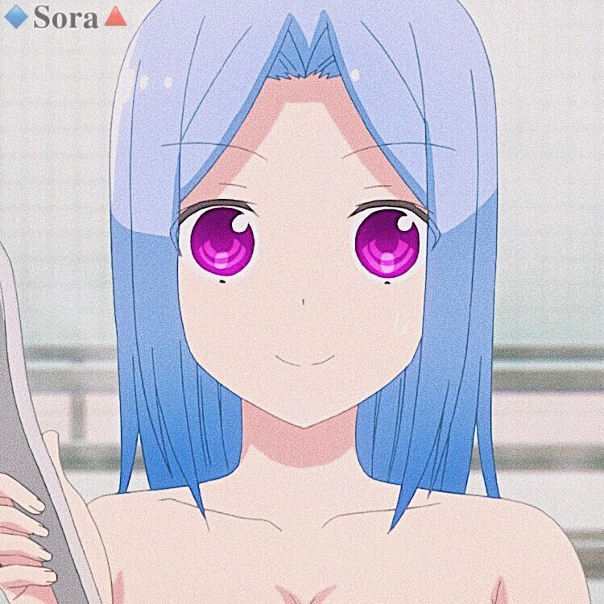
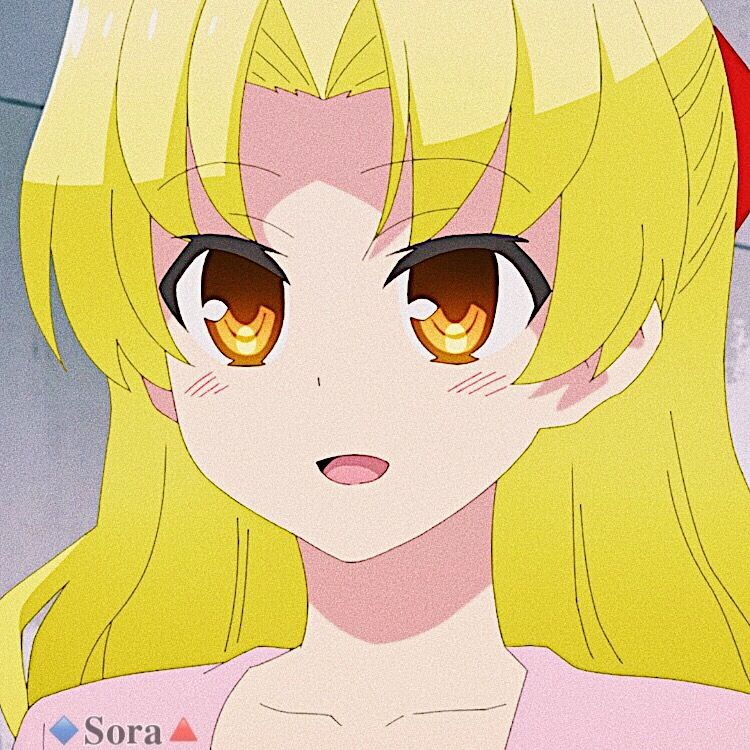
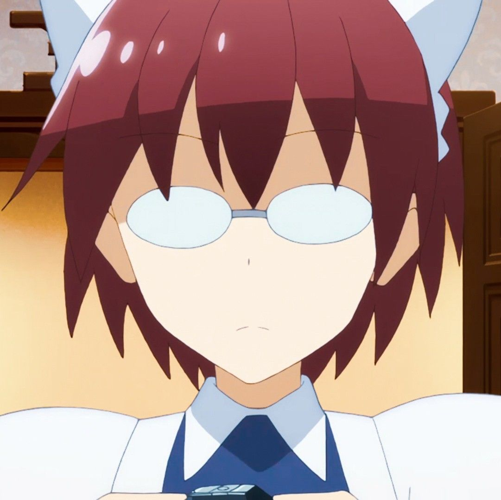
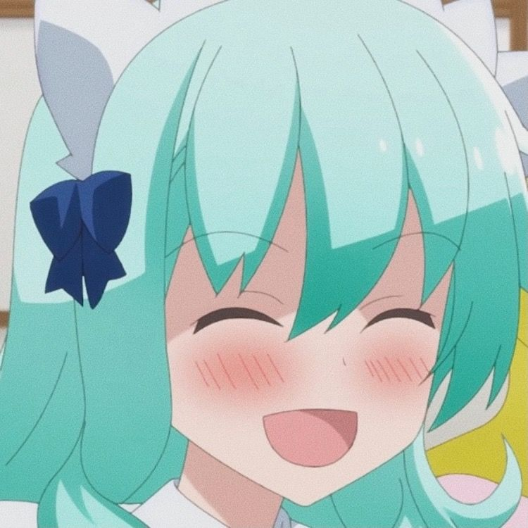

Nasa Yuzaki

Nasa Yuzaki est un jeune homme de 18 ans qui s'est récemment marié avec Tsukasa Yuzaki. Il décrit son histoire d'amour avec Tsukasa comme celle d'un couple uni par un lien irremplaçable, et ce, malgré leur première rencontre très étrange.
Tsukasa Yuzaki

Tsukasa Yuzaki, de son nom de jeune fille Tsukasa Tsukuyomi, est une jeune femme mystérieuse de 16 ans en apparence. Elle s'est récemment mariée avec Nasa Yuzaki, un jeune homme qu'elle a récemment sauvé d'un accident de la route.
Kaname Arisugawa

Kaname est une jeune fille de 15 ans. Elle aide à la gestion et au nettoyage des bains publics Arisugawa avant et après ses cours.
Aya Arisugawa

Aya est une jeune femme de 17 ans. Elle est la grande sœur de Kaname Arisugawa. Lorsqu'elle fait la connaissance de Tsukasa, elle se méprend sur la relation de cette dernière avec Nasa.
Chitose Kaginoji

Chitose est une jeune fille crédule de 14 ans. Elle considère Tsukasa comme sa sœur et tente à plusieurs reprise de la faire revenir chez elle.
Aurora

Aurora est l'une des deux domestiques de Chitose.
Elle possède d'incroyables talents en retouche photo, puisqu'elle est capable de retoucher une photo à la perfection en seulement quelques courts instants.
Charlotte

Charlotte est une des domestiques de Chitose. Peu de temps après avoir rencontré Nasa, elle l'attaque avec une épée géante, prétextant une attaque punitive car celui-ci était entré dans une pièce où il n'était pas censé être.